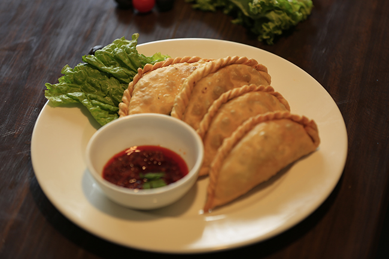

Shyabhale

What is Shyabhale?
It is a dish widely loved both by Nepali and the Tibetan community and is a must-have dish at any Tibetan gathering. Shabhaley is a Tibetan dish made of bread stuffed with seasoned meat and cabbage, which is then fashioned into semi-circular or circular shapes. According to regional variations, it is either deep or pan-fried.
Some people eat them for breakfast, but typically, shabhaley is served with lunch or dinner, often with a basic soup. In Tibet, the most common meat would be that of yak, which is a bit leaner and stronger tasting than buff. But outside Tibet, you will usually find them made from beef or veggies. Tibetan shabhaleys are essentially meat pies. The dough is crunchy on the outside and gooey on the interior. If you like non-veg, you should not miss out on this.
Ingredients to prepare Shyabhale
- 200 grams of meat
- three onions
- 6 garlic cloves
- 2 inch ginger
- 1 tablespoons of cooking wine
- 1 teaspoon of refined oil
- 2 teaspoon of garlic water
- 2 teaspoons of soy sauce
- salt
- pepper
- red chili powder
- 1 ½ cup of all purpose flour
Steps for preparing Shabhale
- wash and clean 200 grams of meat
- chop three onions and 6 garlic cloves
- 2 inch ginger and chop them nicely
- Wash and chop the meat and mix with the chopped onion and clove mixture
- hen add in 1 tablespoons of cooking wine, 1 teaspoon of refined oil and 2 teaspoon of garlic water
- add in 2 teaspoons of soy sauce
- add salt and pepper as required. Add in some red chili powder, if you want the Shapalay to be spicy.
- take a large tray and add in 1 ½ cup of all purpose flour, add in a dash of salt, knead the dough by adding water accordingly.
- Keep the dough aside to rise
- hen, extract dough balls and dust the surface.
- Extract the dough balls and flatten it using a rolling pin, then fill in the cavity the meaty stuffing.
- Then seal the sides by making designs, this would look like a big dumpling, you can give it any desired shape.
- Lastly, add oil in a pan and shallow fry the shapaley by flipping the sides. Once the pie is cooked nicely. Transfer it to a plate and serve with homemade spicy chutney.